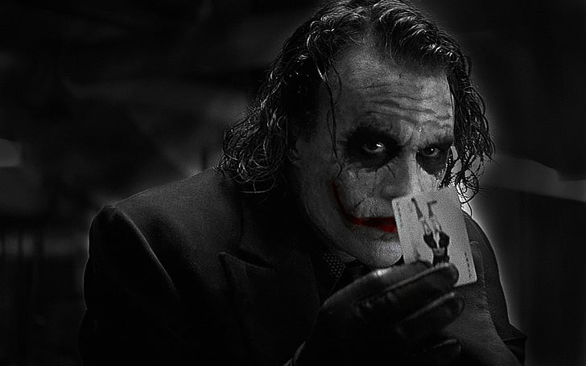
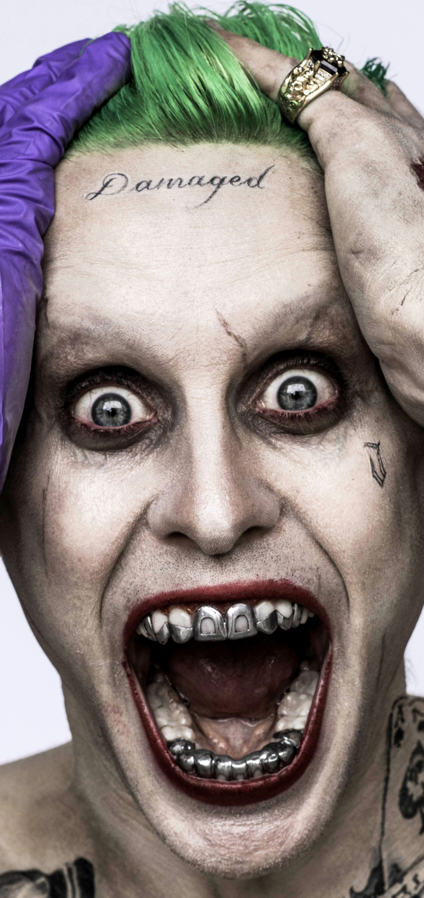
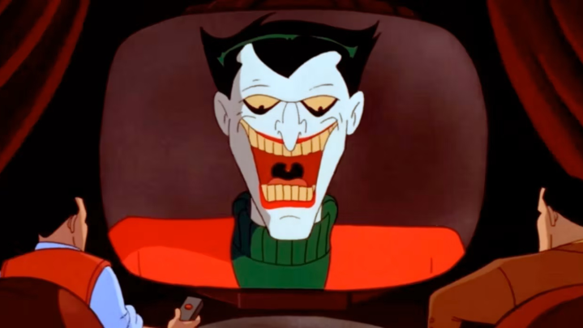

Top 4 Jokers of all time.
1. Heath Ledger
Heath Ledger’s Joker is the absolute embodiment of chaos, as well as a tour-de-force of acting. Ledger’s delivery of his lines,
as well as his movements and mannerisms, made him such an unsettling presence on-screen.
2. Joaquin Phoenix
Joaquin Phoenix’s Joker (aka Arthur Fleck) is a sympathetic and tragic villain
due to how he is wronged by society at a young age. Orphaned, abused, and poverty-stricken since day one,
Fleck is left to simmer in his misery without proper care and support until it all boils to the surface in an explosion of anger and violence.
3. Jared Leto
Jared Leto’s Joker was soured by his questionable character design,
limited screen time, and somewhat cringey dialogue. His character can be somewhat forgiven
due to studio interference in the production of Suicide Squad.
4. Mark Hamill
Who would’ve thought Luke Skywalker would be such a great villain? The legendary Mark Hamill found
his breakout role voicing the Clown Prince of Crime in the ’90s cartoon
Biography of the Joker character
The Joker has undergone many revisions since his 1940 debut. The most common interpretation of the character is that of a man who, while disguised as the criminal Red Hood, is pursued by Batman and falls into a vat of chemicals that bleaches his skin, colors his hair green and his lips red, and drives him insane. The reasons why the Joker was disguised as the Red Hood and his identity before his transformation have changed over time. The character was introduced in Batman #1 (1940), in which he announces that he will kill three of Gotham's prominent citizens. Although the police protect his first announced victim, millionaire Henry Claridge, the Joker had poisoned him before making his announcement and Claridge dies with a ghastly grin on his face. Batman eventually defeats him, sending him to prison. The Joker commits crimes ranging from whimsical to brutal, for reasons that, in Batman's words, "make sense to him alone". Detective Comics #168 (1951) introduced the Joker's first origin story as the former Red Hood: a masked criminal who, during his final heist, vanished after leaping into a vat of chemicals to escape Batman. His resulting disfigurement drove him insane and led him to adopt the name "Joker", from the playing card figure he came to resemble. The Joker's Silver Age transformation into a figure of fun was established in 1952's "The Joker's Millions". In this story, the Joker is obsessed with maintaining his illusion of wealth and celebrity as a criminal folk hero, afraid to let Gotham's citizens know that he is penniless and was tricked out of his fortune. The 1970s redefined the character as a homicidal sociopath. "The Joker's Five-Way Revenge" has the Joker taking violent revenge on the former gang members who betrayed him, while "The Laughing Fish" portrays him chemically disfiguring fish so they will share his trademark grin, hoping to profit from a copyright, and killing bureaucrats who stand in his way.
-wikipedia
Want to know more?
You can signup for free and watch the movies of these legendery character.